01 / Music, art & coffee
Café colombiano de origen, hecho música.
Tueste interpreta el café desde el territorio: origen, ritual, sonido y comunidad. Aquí el café se escucha antes de probarse.
Tueste interpreta el café desde el territorio: origen, ritual, sonido y comunidad. Aquí el café se escucha antes de probarse.
Los primeros 10.200 árboles son fundacionales. Eliges tu lugar en el lote, lo siembras y sigues su año completo.
En Tueste el café no se sirve, se interpreta. Cultivamos café colombiano de origen en el cañón de Aures y lo convertimos en música, ritual y comunidad.
Aquí compras café fresco, siembras un árbol y sigues su cosecha, o vives una experiencia sensorial donde el origen suena antes de llegar a la taza.
Los lotes de la colección Aures, en todas sus presentaciones. Cada bolsa trae el QR musical de su lote.
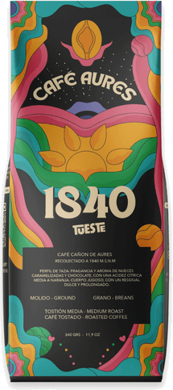
Panela, cereza madura y cacao. Grano entero o molido, tueste medio.
$55.000 COP
Comprar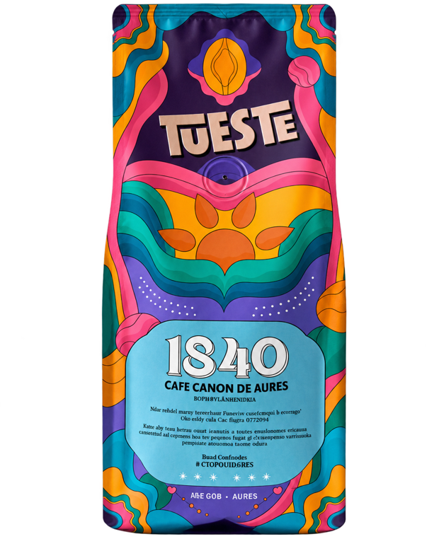
El lote más dulce de la colección. Grano entero o molido.
$55.000 COP Agotado
Avísame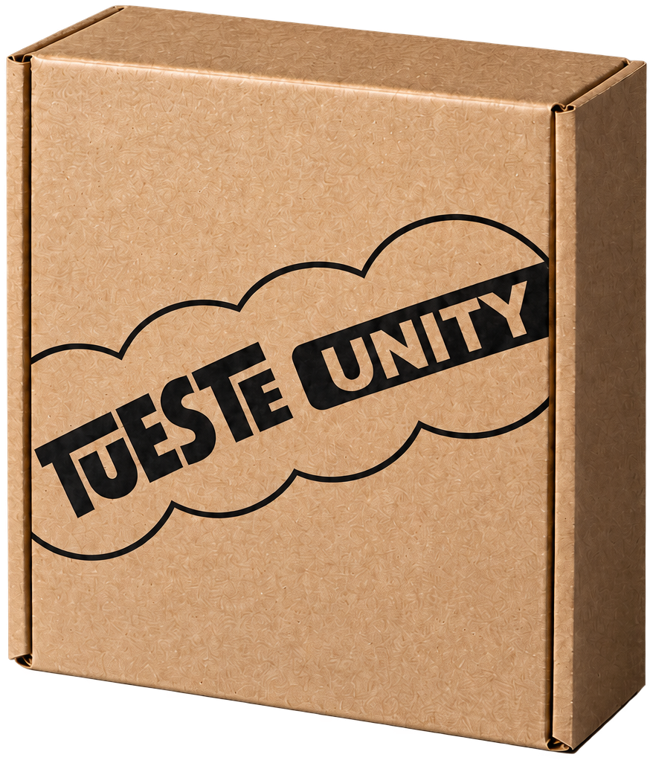
Conscious y Amour juntos: 340 g de cada lote, con su molienda a elegir.
$98.000 COP
Comprar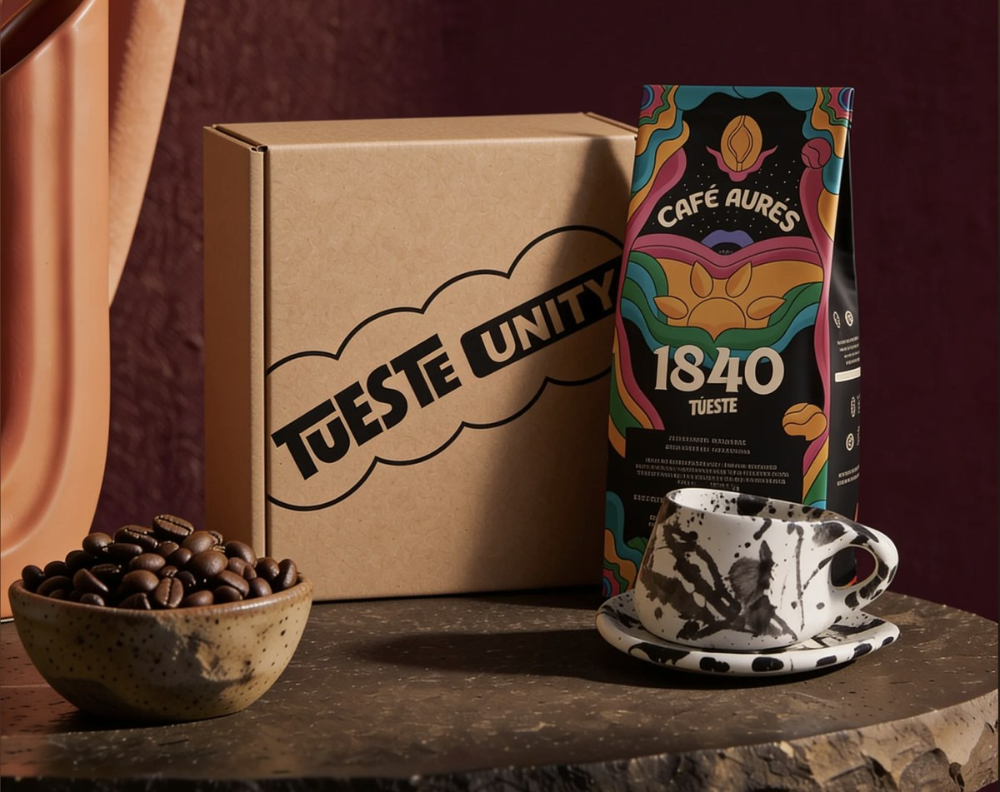
El ritual completo en casa: el lote y una taza hecha a mano por artesanos locales.
$150.000 COP Agotado
Avísame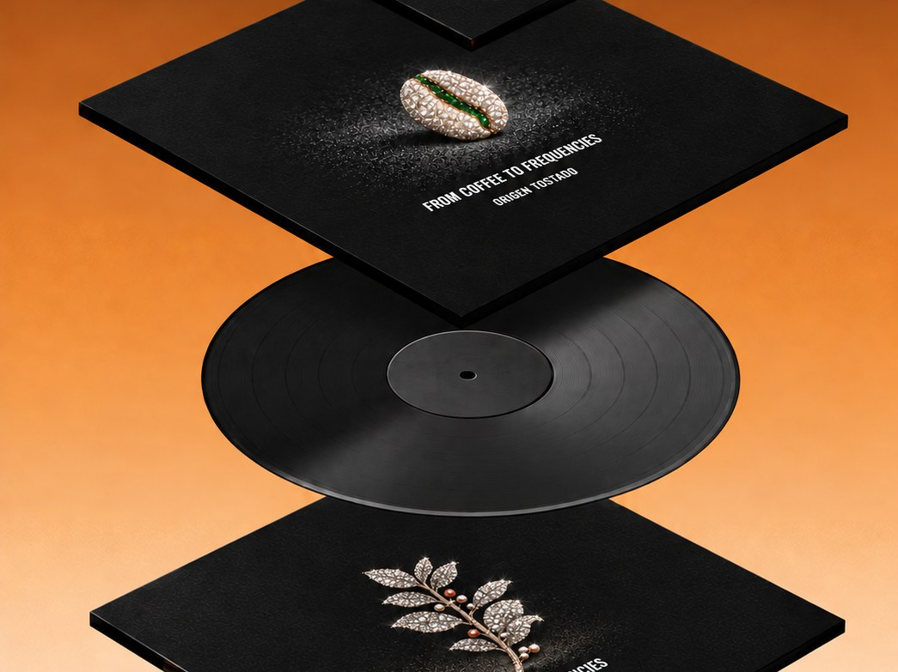
El café que se bebe y se escucha: una frecuencia de Origen Tostado creada para el lote.
$75.000 COP Agotado
Avísame


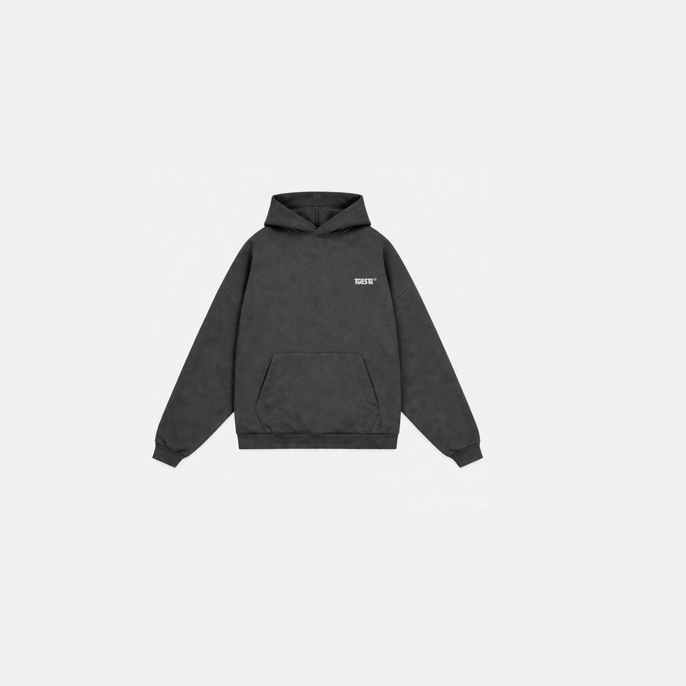
Los primeros 10.200 árboles son fundacionales. No compras una planta: entras a un origen vivo y lo sigues durante todo un año.
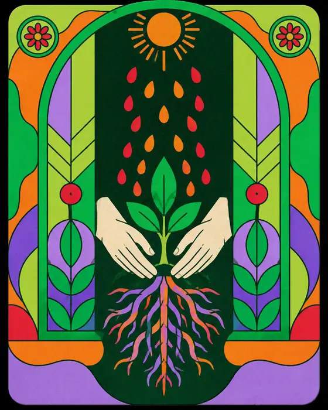
Finca Tres Esquinas · Lote fundacionalEliges tu lugar en el lote, siembras tu árbol en pantalla y recibes tu Certificado de Tradición numerado en 48 horas.
Adopción simbólica y cultural · no representa inversión financiera.
Cada adopción recibe su insignia digital. El acabado cambia según cuántos árboles siembres.
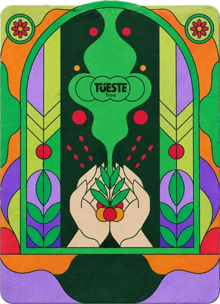
1 – 9Árboles
Semilla
Tarjeta a color sobre papel. El primer árbol del guardián.
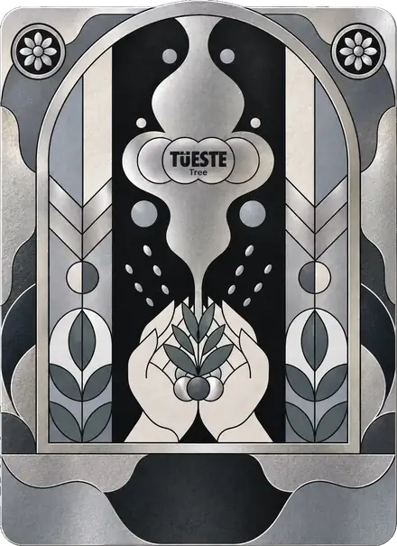
10 – 19Árboles
Plata
Acabado metálico plateado para quien siembra un corredor.
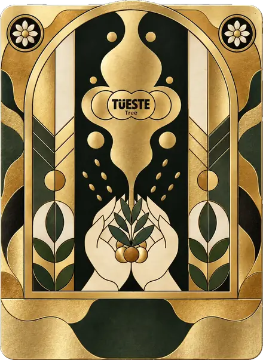
20 – 29Árboles
Oro
Acabado dorado. Una franja entera del lote fundacional.
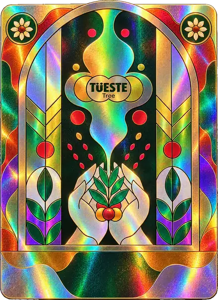
30+Árboles
Holográfica
Arcoíris holográfico. Socio fundador del proyecto.
Cuatro capítulos a lo largo del año, cada uno con algo que te llega.
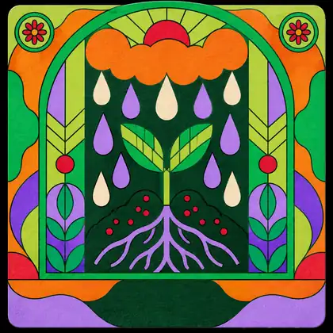
Capítulo 1 · Semanas 1 a 4
Un brote de dos hojas a 1.840 m, envuelto en la niebla del cañón.
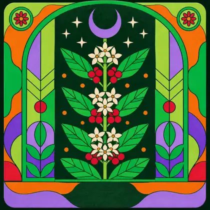
Capítulo 2 · La floración
Tres días de flores blancas y olor a jazmín sobre toda la ladera.
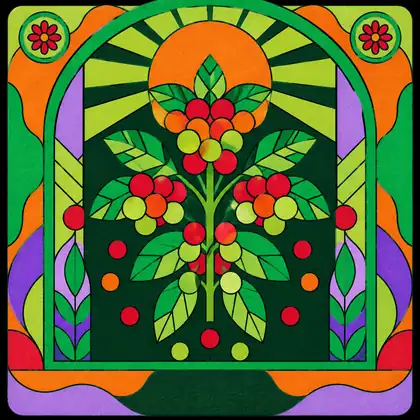
Capítulo 3 · La cosecha
Las cerezas pasan de verde a rojo y se recogen a mano, una por una.
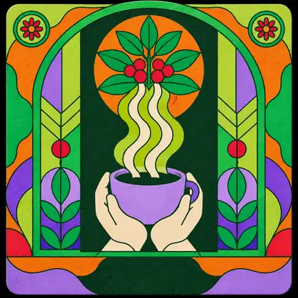
Capítulo 4 · La taza
El lote vuelve tostado a las manos del guardián que lo sembró.
Coffee in Frequencies es el primer álbum de Origen Tostado: diez frecuencias, de 60 Hz al infinito, que recorren el viaje de la semilla de café desde el silencio hasta la expansión.
Más que música, un paisaje sonoro grabado con los sonidos reales del café: una invitación a cerrar los ojos, escuchar a fondo y volver a donde todo empieza. Es la misma frecuencia que vive en el QR de cada bolsa.
¿Quieres vivirlo en persona? Ritual de Adopción Fundador · 001: 30 cupos, 30 árboles, una frecuencia.
Tueste Unity es nuestro estudio creativo y de branding sonoro para marcas de café: co-branding, firma sonora, contenido y experiencias. Cada proyecto se cotiza a la medida.
Curamos música electrónica y creamos canciones con sonidos reales del café, grabados por nuestro equipo en el origen.
Tueste Records es el sello discográfico de Tueste: lanzamientos, artistas y las frecuencias creadas con los sonidos reales del origen. Aquí vive Origen Tostado y todo lo que se viene.
Cada lote tiene su música. Cada lanzamiento, su café.
Universo Tueste
Todo nace en el mismo cafetal del Cañón de Aures: el café que compras, el árbol que siembras, la marca que creas con nosotros y la música que lo cuenta.
Café de origen, piezas y ritual. La casa de todo lo que hacemos.
Entrar →Siembra un árbol en la Finca Tres Esquinas y cofunda un origen.
Entrar →Tu marca de café con nuestro origen y una firma sonora.
Entrar →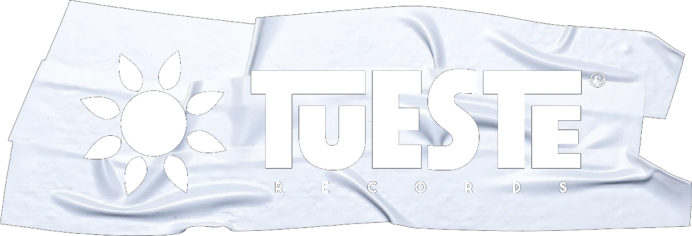
El sello: lanzamientos, artistas y dónde escuchar el café.
Entrar →